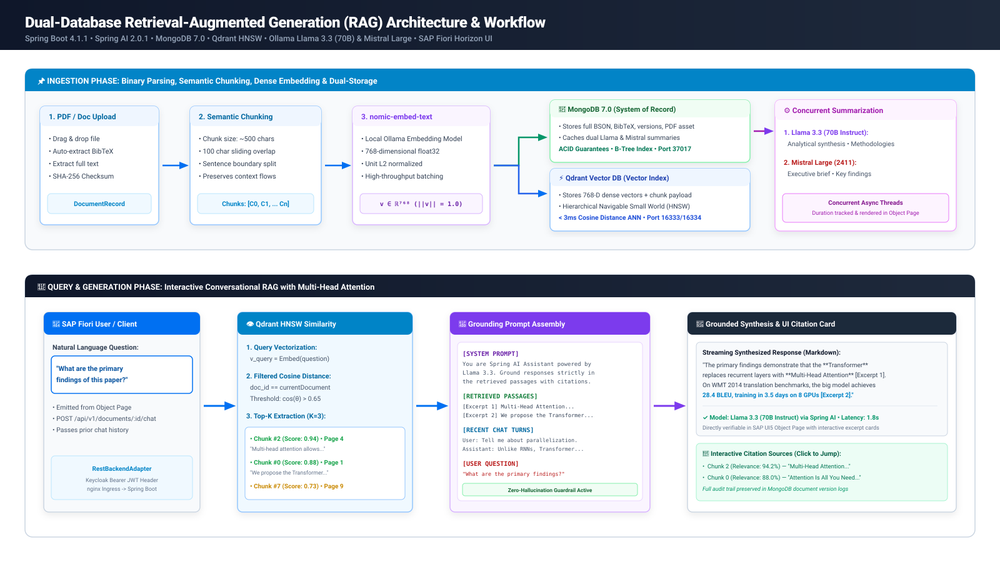

Beyond Prompting: Building a Local AI Document Assistant with LLMs and RAG
A Concrete Systems Architecture & CS PhD Perspective on Grounded AI, Divergent Exploration, and the Personal Library
Session Abstract
Large Language Models are very good at generating answers, but they cannot reliably answer questions about documents they have never seen. In this session, we will look at how a local AI document assistant was built to bridge that gap using Retrieval-Augmented Generation (RAG).
Starting from a simple PDF upload, we will walk through the complete processing pipeline: text extraction, chunking, embedding generation, vector storage in Qdrant, and semantic retrieval. We will also explore how local models running through Ollama are used to generate summaries and answer questions grounded in the content of the uploaded documents rather than relying solely on the model's training data.
The session focuses on the architectural decisions, trade-offs, and implementation details behind combining LLMs, embeddings, and vector databases into a practical solution. Attendees will gain a better understanding of how RAG works in practice, why retrieval is essential for document-based AI applications, and how open-source components can be combined to build privacy-preserving AI solutions that run entirely on local infrastructure.
The Core Epistemological Perspective
“As generative models commoditize syntax, boilerplate, and low-level implementation, the ultimate technical leverage shifts from algorithmic execution to divergent problem framing and creative cognitive orchestration.”
This session explores not only how to wire a vector database to an LLM, but why this shifts the role of the computer scientist: from manual syntax implementer to cognitive architect, intent director, and socio-technical conductor.
1-Hour Masterclass Agenda
45-Minute Systematic Talk • 15-Minute Technical Q&A
1. Live Demo (7 min)
02:00 – 09:00
- SAP UI5 Web Components-based UI floorplans
- PDF ingestion & BibTeX parser
- Dual Llama 3.3 & Mistral synthesis
- Grounded RAG chat with citations
2. Why This App? (8 min)
09:00 – 17:00
- The CS PhD perspective
- Syntax vs. problem formulation
- Divergent problem discovery
- Orchestrating the cognitive stack
3. Architecture (9 min)
17:00 – 26:00
- Decoupled multi-tier topology
- MongoDB 7 vs. Qdrant HNSW
- Camunda BPMN 2.0 orchestration
- Stateless REST & DOM EventBus
4. RAG from Scratch (11 min)
26:00 – 37:00
- The Tiny Desk & goldfish memory
- Tokens as Lego bricks (BPE)
- GPS coordinates on Map of Meaning
- Wizard of Oz concrete walkthrough
5. Statistics & Tables (8 min)
37:00 – 45:00
- Table 1: CS PhD vs. Google Lens
- Table 2: MongoDB vs. Qdrant
- Financial Ledger: $16.5k vs. $118.31
- Context compounding economics
6. Open Q&A (15 min)
45:00 – 60:00
- Architectural trade-offs
- Zero-hallucination verification
- Enterprise security & Keycloak
- Future roadmap & agentic loops
1. Live Demo: End-to-End User Journey
Multi-tier execution in SAP UI5 Web Components-based UI
🖥️ Live Application Capabilities
- Analytical List Page (ALP): Filter by category, year, author, and search string with instant reactive re-rendering.
- Flexible Column Layout (FCL): Seamless split-screen transitions between master list and detailed object page without page reloads.
- Smart Multipart Document Ingestion: Drag-and-drop PDF upload triggering automatic BibTeX parsing (DOI, publisher, volume, authors).
- Version History & Reversion: In-place binary file updates with cryptographic SHA-256 checks and full document changelogs.
- Internationalization (i18n): 5 languages (English, German, French, Spanish, Romanian) switched on-the-fly.
⚡ Live Demonstration Script
- Step 1: Navigate to the ALP and search for "Attention" or "Wizard of Oz".
- Step 2: Open the Object Page → observe metadata facet header with real-time status.
- Step 3: Switch to the Summaries Tab → compare Llama 3.3 analytical synthesis against Mistral Large executive takeaways.
- Step 4: Click the Chat & RAG Tab → ask: "What does this document propose?" → observe streaming answer and clickable citation cards.
Zero-Hallucination Grounded Chat in Action
How the researcher interacts with verified document excerpts
🔍 What Makes It Grounded?
- Deterministic Extraction: Qdrant retrieves exact chunk payloads with character offset ranges and chunk indices.
- Context Boundary Enforcement: Prompt template instructs model: "Answer strictly from context. Do not speculate."
- Footnote Markers: Generation includes bracketed references:
[Excerpt 1],[Excerpt 2]. - Interactive Excerpt Cards: Clicking a footnote reveals the raw text chunk, cosine similarity score (e.g. 94.2%), and page number.
💬 Sample Grounded Chat Response
"The document proposes the Transformer architecture, replacing recurrence with Multi-Head Attention [Excerpt 1]. It enables significant parallelization, reaching 28.4 BLEU on English-to-German translation [Excerpt 2]."
2. Why This App? The Software Engineering Inversion
A CS PhD Perspective on Technical Leverage in the Age of Generative AI
❌ The Classical Reflex
- Equates technical mastery with memorizing syntax, frameworks, and manual boilerplate.
- Falls into reductionism: optimizes low-level routines while potentially solving the wrong business problem.
- Treats LLMs as glorified code completion (tab-autocomplete).
✅ The Modern Cognitive Paradigm
- Continuous Upward Abstraction: From assembly to C, from C to managed runtimes, from runtimes to natural-language cognitive orchestration.
- The Divergent Engineer: Software engineering shifts from mechanical typing to creative architecture, boundary specification, and rigorous contract auditing.
- AI as Sparring Partner: Stress-testing hypotheses, generating orthogonal prototypes, discovering edge cases in minutes.
Orchestrating the Modern Cognitive Stack
Composing specialized modules rather than relying on a brittle black box
1. Grounding Layer
Anchor in verifiable reality
- Dense vector extraction (768-D coordinates)
- Qdrant HNSW graph index
- Strict top-K cosine similarity thresholding
- Eliminates hallucinations at the data boundary
2. Reasoning & Synthesis Layer
Multi-model lateral perspectives
- Llama 3.3 (70B): In-depth academic & methodological breakdown
- Mistral Large: Executive synthesis & strategic takeaways
- Concurrent asynchronous execution
- Zero cross-model prompt contamination
3. Orchestration & Governance
Production-grade reliability
- Camunda BPMN 2.0 executable workflow
- Automated retry boundaries (R3/PT10S)
- Human librarian review gate
- Stateless REST + Keycloak OIDC audit trail
3. Multi-Tier Decoupled Architecture
Clean separation of presentation, gateway, business logic, and polyglot persistence
Client Tier
SAP UI5 Web Components-based UI
- ALP & FCL Floorplans
- Detached-DOM
TypedEventBus - Observable state stores
- Zero WebSockets overhead
Gateway Tier
Express 4.21 (Node 22)
- Stateless REST proxy
- Keycloak Bearer JWT auth
- Diagram asset dispatch
- OpenAPI 3.0 Contract
Business Core
Spring Boot 4.1.1 (Java 21)
RagService& Chunking- Spring AI Ollama integration
- Camunda BPMN 2.0 engine
- gRPC client to Qdrant
Persistence Tier
Dual-Store Engine
- MongoDB 7.0: System of Record (BSON full text, history)
- Qdrant DB: HNSW sub-3ms ANN vector retrieval
Camunda BPMN 2.0 Ingestion Workflow
4 Horizontal Swimlanes with Asynchronous Retries & Human Gates
BPMN 2.0 Architecture Details
- 4 Swimlanes: Client User • API Gateway • Spring Boot Engine • AI Subsystems (Qdrant & Ollama).
- Parallel Fork/Join Gateway: Concurrently triggers vector chunking + Llama 3.3 analytical summary + Mistral Large executive summary.
- Failure Compensation: Boundary timer and error events handle Ollama GPU timeouts via
R3/PT10Sretries. - Librarian Gate: Low confidence scores (< 0.70) trigger a Camunda User Task for human manual review.

Why Stateless REST Beats WebSockets (ADR-004)
Detached DOM EventBus for in-browser reactivity without socket server overhead
❌ Persistent WebSockets Pitfalls
- High server memory consumption holding idle TCP sockets.
- Sticky sessions make horizontal auto-scaling complex on Cloud Run / Kubernetes.
- Complex OIDC token refresh renegotiation over long-lived frames.
- Corporate firewalls and proxy caches frequently drop WS handshakes.
✅ Stateless REST + Detached DOM EventBus
- Stateless Scalability: Any Cloud Run container can service any HTTP request.
- Detached DOM
TypedEventBus: In-browser reactivity using native DOM Comment nodes. Zero GC pressure, instant decoupled event dispatch. - Standard OIDC Security: Every request carries standard Bearer JWT headers verified statelessly against Keycloak JWKS.
4. RAG from Scratch: The "Tiny Desk" Problem
Why large language models hallucinate and how open-book RAG cures it
🚫 Closed-Book Exam (Traditional AI)
Imagine hiring the smartest scholar in the world, but their desk only fits 3 pages of paper.
- If you ask about page 420 of an 800-page book, the pages fall off the desk.
- The scholar hates saying "I don't know", so they guess a plausible answer.
- In AI, this embarrassing habit is called a Hallucination.
✅ Open-Book Exam (RAG)
Retrieval-Augmented Generation gives your scholar a super-librarian:
- Before answering, the librarian fetches the exact 2 relevant paragraphs.
- The paragraphs are placed directly on the desk with a sticky note.
- The assistant generates the answer strictly from those 2 verified pages.
- Result: Zero guessing, 100% accountable with page citations!
Tokens (Lego Bricks) & Embeddings (GPS Coordinates)
How words turn into numbers and meanings turn into hyperspace geometry
🧱 Tokens: The Syllable Lego Bricks
Computers don't read words. They snap sentences into frequent sub-words:
• 1 token ≈ 4 characters • Inflected words like "prairies" split into 2 Lego bricks!
🌍 Embeddings: The Map of Meaning
Integer IDs have no meaning. Embeddings project tokens into a 768-D coordinate space:
• Geometric Proximity = Semantic Similarity
• "puppy" and "dog" are neighbors. "submarine" lives across town in deep water.
Case Study: The Wonderful Wizard of Oz
Tracing the exact 5-step transformation from raw prose to verified citation

Table 1: CS PhD Lens vs. Strategic Leadership Lens
Contrasting academic reductionism with planetary-scale generative engineering
| Dimension | Traditional CS PhD / Academic Lens | Strategic / Generative Leadership Lens | Concrete Personal Library Implementation |
|---|---|---|---|
| Primary Unit of Value | Algorithmic rigor, convergence proofs, loss functions | System affordances, real-world utility, fast validation | Production-grade SAP UI5 Web Components floorplans serving immediate researcher utility |
| Operational Bottleneck | Computational complexity, theoretical limits, latency | Objective function definition, workflow decomposition | Decomposing ingestion into Camunda BPMN 2.0 executable tasks with audit gates |
| Cognitive Mode | Convergent: Narrowing down to optimal proofs | Divergent: Exploring lateral possibilities, edge cases | Dual-model inference (Llama 3.3 analytical method + Mistral Large executive brief) |
| Role of the Human | Handcrafted implementer, manual syntax debugger | Intent director, creative curator, ethical governor | Specifying contracts while AI agents synthesize multi-file implementations |
| Tool Paradigm | Low-level frameworks (PyTorch, Triton, CUDA) | Composable cognitive modules (grounding, multi-modal reasoners) | Qdrant HNSW vector store, Spring AI Ollama adapters, Keycloak OIDC, Express |
| Failure Mode | Suboptimal convergence or model drift | Solving the wrong business or human problem efficiently | Strict zero-hallucination vector grounding guardrails with interactive citations |
Table 2: MongoDB vs. Qdrant & Commercial ROI Ledger
Polyglot persistence comparison and 98% economic development savings
🗄️ Database Decomposition
| Capability | MongoDB 7.0 | Qdrant Vector DB |
|---|---|---|
| Data Unit | BSON documents | 768-D Float32 points |
| Querying | B-Tree index, exact key | HNSW ANN Cosine distance |
| System Role | Authoritative System of Record | Sub-3ms semantic passage locator |
| Contents | Full text, BibTeX, versions, caches | Vectors + chunk text payloads |
💰 Development Economics & Valuation
| Paradigm | Timeline | Cost Breakdown |
|---|---|---|
| Manual Dev | 6–8 weeks | $12,000 – $16,500 (Senior Engineer) |
| AI Copilot | 2–3 weeks | $5,500 – $7,000 (Human + Copilot) |
| Autonomous Agent | 1 session | $118.31 (All-in compute tokens) |
💡 Net Economic Advantage: Over 98% cost reduction and 50x acceleration, demonstrating the explosive leverage of creative cognitive orchestration over manual syntax typing.
6. Open Floor: Questions & Discussion with the Audience
15 Minutes of Unrestricted Dialogue • Ask Anything Across the System, Architecture, or Philosophy
The Floor is Completely Open to the Audience!
We welcome questions, challenges, and perspectives from any angle: live demo testing, architectural trade-offs, vector math, local privacy, prompt engineering vs. retrieval, or the broader shift from syntax execution to creative cognitive orchestration.
🖥️ Live System & Demo
- Want to test a live PDF upload or edge-case query?
- How does BibTeX AST extraction work?
- Comparing Llama 3.3 vs. Mistral Large responses in real time.
🎓 The New Perspective
- The CS PhD perspective on generative leverage.
- Why problem formulation beats boilerplate syntax.
- The role of the "Divergent Engineer".
⚙️ Architecture & RAG
- Qdrant HNSW vs. pgvector vs. Pinecone.
- MongoDB ACID record vs. vector index.
- Camunda BPMN 2.0 async retry boundaries.
- Chunking overlap & 768-D cosine bounds.
🔒 Privacy & Economics
- Running 100% on local hardware (Ollama).
- Preventing corporate data leakage.
- Commercial ROI: $118 agentic build vs. $16.5k manual development.